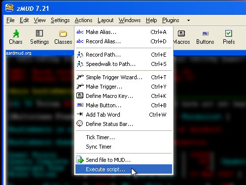

Fiendish's Super Amazing Automap Capture Script For zMUD
Tested to work in zMUD 7.21 on Windows XP. Not guaranteed to work in other versions or system configurations.
New in the July 1, 2008 update:
- The script no longer captures a fixed number of lines. Instead it puts a trigger in the settings for the map window. This is uglier, but more flexible. It should now work with the new mapnames and mapexits tag options.
What this script does:
- Captures the automap to a floating window so that it always stays in the same place on the screen instead of jumping around.
See the picture at the bottom if you don't understand.
Download the script here: Automap Capture Script
IF YOU DO NOT INSTALL THIS SCRIPT AS DESCRIBED BELOW YOU WILL BE SORRY.
------------ BEGIN INSTRUCTIONS ------------
This script installs a class named "AutoMap" after deleting existing classes of the same name.
If any of your scripts conflict with this class name, they must be removed first or they'll be removed for you.
Before installing the script, you need to do the following steps...
Step one: Make sure that shortmap is NOT enabled by using the shortmap command. You need to see "You will now see blank lines on the map."
Optional steps: If you do/don't want to see the map update as you walk, you can toggle that feature using the "automap" command. You can also toggle seeing it during runs with the "maprun" command.
To install the script go to the Actions menu in zMUD and choose "Execute script..."

Then select the text file containing the script, in this case AutoMap.txt, and click Open

The script then installs and pops up your new floating map window.
zMUD will ask you to save a file called MAP.mud. Just click SAVE.
The map should now look something like this...
(Note: I've done some fancypants character substitution with a custom font, so yours won't look exactly like this)
Now you need to resize the map window to your liking and then go to the Layout menu and lock and save your layout.
Note: There is currently a bug (in zMUD as far as I know) that will make the map window load with a scroll bar when you next launch zMUD.
There is nothing that you can do about this that will be permanent so just resize the map window next time to accomodate the scroll bar intrusion.
With thanks to Atreidess for suggestions.
If you have questions, feel free to send tells.
- Fiendish